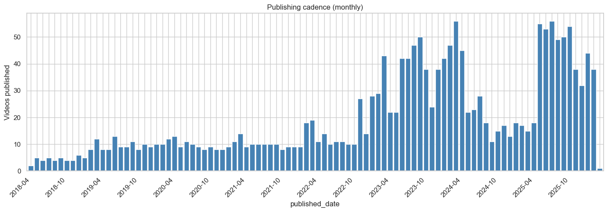
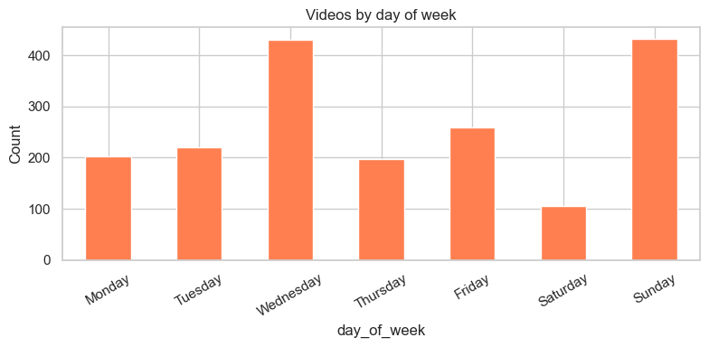
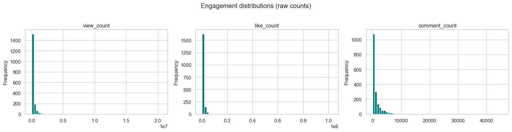
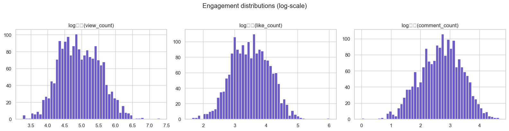
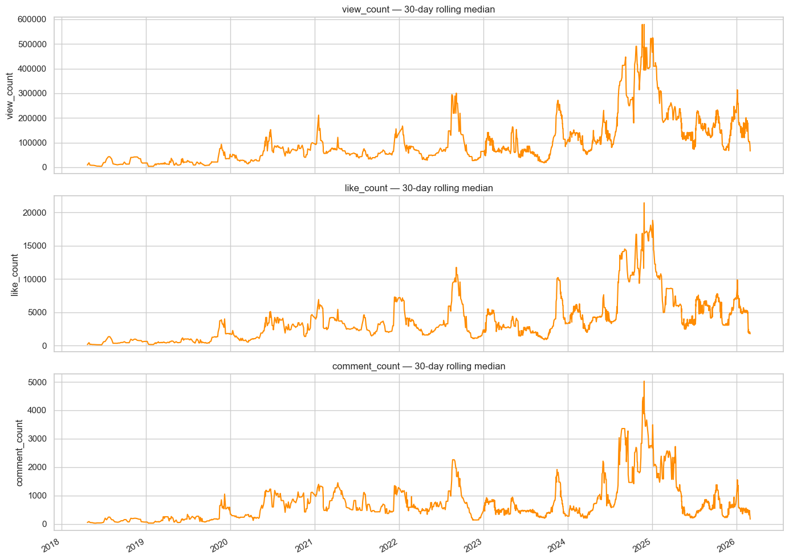
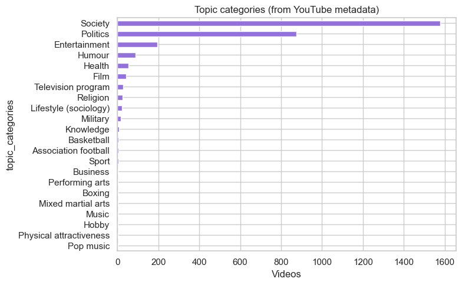
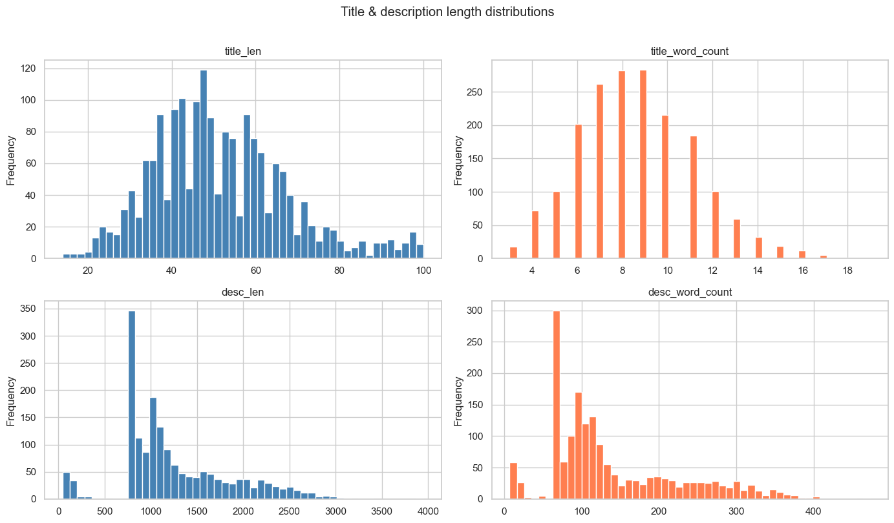
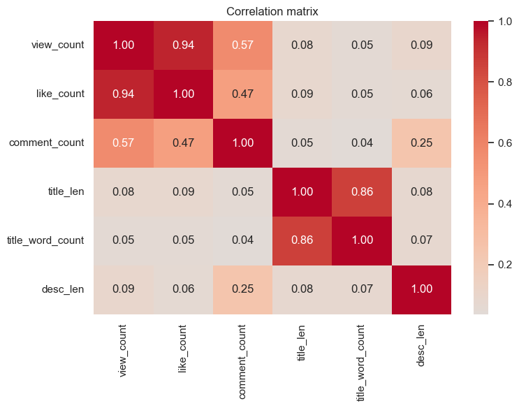

Show the code
import pandas as pd
import matplotlib.pyplot as plt
import matplotlib.dates as mdates
import seaborn as sns
import numpy as np
from collections import Counter
sns.set_theme(style="whitegrid")
plt.rcParams["figure.figsize"] = (14, 5)Cursory look at the scraped channel data before deeper NLP analysis.
Rows: 1,849 | Columns: 11| published_date | type | title | description | url | view_count | like_count | comment_count | category_id | tags | topic_categories | |
|---|---|---|---|---|---|---|---|---|---|---|---|
| 0 | 2018-04-23 | video | Gideon Rachman on Trump, Russia, China, Israel... | 💥Join us on our Journey to 1 Million Subscribe... | https://www.youtube.com/watch?v=FvQrTzox-To | 9316 | 144 | 55 | 25 | gideon rachman|ft|financial times|asia|eastern... | https://en.wikipedia.org/wiki/Politics|https:/... |
| 1 | 2018-04-30 | video | Andrew Doyle on Free Speech, Political Correct... | 💥Join us on our Journey to 1 Million Subscribe... | https://www.youtube.com/watch?v=7jgs4epz5Tk | 27216 | 706 | 115 | 25 | free speech|political correctness|freedom of s... | https://en.wikipedia.org/wiki/Politics|https:/... |
| 2 | 2018-05-04 | video | Andrew Doyle on Privilege | 💥Join us on our Journey to 1 Million Subscribe... | https://www.youtube.com/watch?v=xPUHSPrVWeU | 8106 | 140 | 7 | 25 | free speech|political correctness|politically ... | https://en.wikipedia.org/wiki/Entertainment |
<class 'pandas.DataFrame'>
RangeIndex: 1849 entries, 0 to 1848
Data columns (total 11 columns):
# Column Non-Null Count Dtype
--- ------ -------------- -----
0 published_date 1849 non-null datetime64[us]
1 type 1849 non-null str
2 title 1849 non-null str
3 description 1722 non-null str
4 url 1849 non-null str
5 view_count 1849 non-null int64
6 like_count 1849 non-null int64
7 comment_count 1849 non-null int64
8 category_id 1849 non-null int64
9 tags 1786 non-null str
10 topic_categories 1819 non-null str
dtypes: datetime64[us](1), int64(4), str(6)
memory usage: 159.0 KB| published_date | view_count | like_count | comment_count | category_id | |
|---|---|---|---|---|---|
| count | 1849 | 1.849000e+03 | 1.849000e+03 | 1849.000000 | 1849.000000 |
| mean | 2023-07-16 09:20:44.131963 | 2.346947e+05 | 8.164992e+03 | 1559.640887 | 24.825852 |
| min | 2018-04-23 00:00:00 | 0.000000e+00 | 0.000000e+00 | 0.000000 | 17.000000 |
| 25% | 2022-06-19 00:00:00 | 3.069500e+04 | 1.108000e+03 | 155.000000 | 25.000000 |
| 50% | 2023-11-17 00:00:00 | 7.915200e+04 | 3.092000e+03 | 531.000000 | 25.000000 |
| 75% | 2025-05-08 00:00:00 | 2.456630e+05 | 8.736000e+03 | 1559.000000 | 25.000000 |
| max | 2026-03-01 00:00:00 | 2.057502e+07 | 1.028120e+06 | 45537.000000 | 28.000000 |
| std | NaN | 6.349391e+05 | 2.690170e+04 | 3151.484264 | 0.750874 |
df = df.sort_values("published_date").reset_index(drop=True)
# Videos per month
monthly = df.set_index("published_date").resample("ME").size()
fig, ax = plt.subplots()
monthly.plot(kind="bar", ax=ax, width=0.85, color="steelblue")
# Show only every 6th label to avoid crowding
tick_labels = [d.strftime("%Y-%m") if i % 6 == 0 else "" for i, d in enumerate(monthly.index)]
ax.set_xticklabels(tick_labels, rotation=45, ha="right")
ax.set_ylabel("Videos published")
ax.set_title("Publishing cadence (monthly)")
plt.tight_layout()
plt.show()
# Day-of-week distribution
day_order = ["Monday", "Tuesday", "Wednesday", "Thursday", "Friday", "Saturday", "Sunday"]
df["day_of_week"] = df["published_date"].dt.day_name()
day_counts = df["day_of_week"].value_counts().reindex(day_order)
fig, ax = plt.subplots(figsize=(8, 4))
day_counts.plot(kind="bar", ax=ax, color="coral")
ax.set_ylabel("Count")
ax.set_title("Videos by day of week")
plt.xticks(rotation=30)
plt.tight_layout()
plt.show()
engagement_cols = ["view_count", "like_count", "comment_count"]
fig, axes = plt.subplots(1, 3, figsize=(16, 4))
for ax, col in zip(axes, engagement_cols):
df[col].dropna().plot(kind="hist", bins=60, ax=ax, color="teal", edgecolor="white")
ax.set_title(col)
ax.set_xlabel("")
plt.suptitle("Engagement distributions (raw counts)", y=1.02)
plt.tight_layout()
plt.show()
# Log-scale distributions (more readable for skewed data)
fig, axes = plt.subplots(1, 3, figsize=(16, 4))
for ax, col in zip(axes, engagement_cols):
vals = df[col].dropna()
vals = vals[vals > 0]
ax.hist(np.log10(vals), bins=50, color="slateblue", edgecolor="white")
ax.set_title(f"log₁₀({col})")
ax.set_xlabel("")
plt.suptitle("Engagement distributions (log-scale)", y=1.02)
plt.tight_layout()
plt.show()/var/folders/r9/gmqzlhhd67vdxkgnkq05lj6h0000gn/T/ipykernel_44305/3160686348.py:10: UserWarning: Glyph 8321 (\N{SUBSCRIPT ONE}) missing from font(s) Arial.
plt.tight_layout()
/var/folders/r9/gmqzlhhd67vdxkgnkq05lj6h0000gn/T/ipykernel_44305/3160686348.py:10: UserWarning: Glyph 8320 (\N{SUBSCRIPT ZERO}) missing from font(s) Arial.
plt.tight_layout()
/opt/homebrew/Caskroom/miniconda/base/envs/stats-notes-python/lib/python3.12/site-packages/IPython/core/pylabtools.py:170: UserWarning: Glyph 8321 (\N{SUBSCRIPT ONE}) missing from font(s) Arial.
fig.canvas.print_figure(bytes_io, **kw)
/opt/homebrew/Caskroom/miniconda/base/envs/stats-notes-python/lib/python3.12/site-packages/IPython/core/pylabtools.py:170: UserWarning: Glyph 8320 (\N{SUBSCRIPT ZERO}) missing from font(s) Arial.
fig.canvas.print_figure(bytes_io, **kw)
# Engagement over time (rolling 30-day median)
fig, axes = plt.subplots(3, 1, figsize=(14, 10), sharex=True)
for ax, col in zip(axes, engagement_cols):
rolling = df.set_index("published_date")[col].rolling("30D").median()
rolling.plot(ax=ax, color="darkorange")
ax.set_ylabel(col)
ax.set_title(f"{col} — 30-day rolling median")
axes[-1].set_xlabel("")
plt.tight_layout()
plt.show()
Like / view ratio
count 1848.000000
mean 0.038590
std 0.014525
min 0.004989
25% 0.028387
50% 0.036329
75% 0.046889
max 0.121758
Name: like_per_view, dtype: float64
Comment / view ratio
count 1848.000000
mean 0.007567
std 0.006136
min 0.000042
25% 0.003392
50% 0.006393
75% 0.009897
max 0.052456
Name: comment_per_view, dtype: float64Video types:
type
video 1012
livestream 525
short 312
Name: count, dtype: int64
Category IDs:
category_id
25 1684
22 87
24 44
23 17
27 12
28 3
17 2
Name: count, dtype: int64Unique tags: 7,031
Total tag usages: 32,958
tags
triggerpod 1765
konstantin kisin 1765
francis foster 1763
triggernometry 1750
trigonometry 1302
trigger 1289
kissin 1270
trig 965
interview 916
kk 906
ff 904
joe rogan 437
jre 427
rubin report 399
joe rogan experience 358
trump 119
free speech 103
israel 86
politics 85
woke 74
donald trump 65
trans 65
immigration 63
america 63
palestine 62
russia 61
uk 61
comedy 58
gaza 57
brexit 56
Name: count, dtype: int64# topic_categories are pipe-separated Wikipedia URLs
all_topics = (
df["topic_categories"]
.dropna()
.str.split("|")
.explode()
.str.replace("https://en.wikipedia.org/wiki/", "", regex=False)
.str.replace("_", " ")
)
topic_counts = all_topics.value_counts()
fig, ax = plt.subplots(figsize=(8, 5))
topic_counts.plot(kind="barh", ax=ax, color="mediumpurple")
ax.invert_yaxis()
ax.set_xlabel("Videos")
ax.set_title("Topic categories (from YouTube metadata)")
plt.tight_layout()
plt.show()
df["title_len"] = df["title"].str.len()
df["title_word_count"] = df["title"].str.split().str.len()
df["desc_len"] = df["description"].str.len()
df["desc_word_count"] = df["description"].str.split().str.len()
fig, axes = plt.subplots(2, 2, figsize=(14, 8))
for ax, col, colour in zip(
axes.flat,
["title_len", "title_word_count", "desc_len", "desc_word_count"],
["steelblue", "coral", "steelblue", "coral"],
):
df[col].dropna().plot(kind="hist", bins=50, ax=ax, color=colour, edgecolor="white")
ax.set_title(col)
plt.suptitle("Title & description length distributions", y=1.01)
plt.tight_layout()
plt.show()
| published_date | title | view_count | like_count | comment_count | |
|---|---|---|---|---|---|
| 979 | 2024-01-11 | Mind-Blowing Game Invented by Russian Sociolog... | 20575018 | 1028120 | 29733 |
| 1398 | 2025-05-14 | Triggernometry Meets Guilty Feminist | 6216319 | 121694 | 15745 |
| 1414 | 2025-05-21 | Why More Jews Died in the Netherlands Than in ... | 5999262 | 107929 | 6069 |
| 81 | 2019-06-05 | Comedian DESTROYS 3 SJWs with facts and logic ... | 4766961 | 82681 | 17201 |
| 964 | 2023-12-15 | Russia has NEVER had a democracy... #shorts #p... | 3894071 | 122721 | 6525 |
| 632 | 2023-03-22 | Piers Morgan ADMITS he was wrong... (PT1) #shorts | 2964942 | 61956 | 4126 |
| 1006 | 2024-01-26 | Is this the truth about Israel? 🇮🇱🇵🇸 #shorts #... | 2873513 | 66894 | 19038 |
| 1543 | 2025-08-01 | Understanding history means confronting uncomf... | 2766635 | 110872 | 11272 |
| 1403 | 2025-05-15 | Are You Calling Me A Hysterical Woman? | 2759432 | 69851 | 10702 |
| 1609 | 2025-09-12 | Stop Calling Everyone You Disagree With Nazis | 2662943 | 138452 | 10061 |
| 910 | 2023-10-29 | Tony Hinchcliffe: Cancelled for a Joke | 2553660 | 41137 | 9756 |
| 1745 | 2025-12-09 | “War Sucks… But That Sucks Worse.” - Nick Freitas | 2527848 | 88286 | 4274 |
| 1284 | 2024-11-10 | Rob Schneider: I'm So Happy Trump Won | 2482371 | 81947 | 9749 |
| 1553 | 2025-08-07 | Those who say they oppose "hate speech" sure d... | 2399437 | 68701 | 7434 |
| 1410 | 2025-05-19 | How the Italian Ultras Took Over Football — Jo... | 2268566 | 34493 | 1345 |
| 1555 | 2025-08-10 | An Honest Conversation With Tommy Robinson | 2255205 | 83181 | 23326 |
| 1580 | 2025-08-24 | The Best Conversation About History You’ve Eve... | 2208928 | 48661 | 8865 |
| 1305 | 2024-12-18 | The Rise of the Right is the Left's Fault - St... | 2094548 | 46522 | 12583 |
| 495 | 2022-09-22 | Theo Von learns the TRUTH About Britain 😂 #sho... | 2058821 | 45459 | 730 |
| 1747 | 2025-12-10 | A Revolution is Coming! - Jimmy Carr | 2047120 | 48187 | 10350 |
corr_cols = ["view_count", "like_count", "comment_count", "title_len", "title_word_count", "desc_len"]
corr = df[corr_cols].corr()
fig, ax = plt.subplots(figsize=(8, 6))
sns.heatmap(corr, annot=True, fmt=".2f", cmap="coolwarm", center=0, ax=ax)
ax.set_title("Correlation matrix")
plt.tight_layout()
plt.show()
Summary so far:
Quick-look at publishing cadence, engagement distributions and trends, tag/topic breakdowns, and text-length profiles. These baselines inform the deeper word-frequency and NLP analysis in the next notebook.